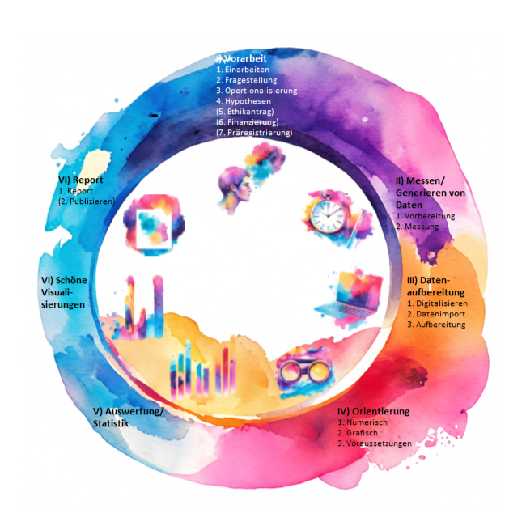

Inhalt
In diesem Tutorial stellen wir euch die Roadmap des wissenschaftlichen Prozesses vor, an der wir alle weiteren Tutorials orientieren.
Lernziele
Ich kenne die Roadmap des wissenschaftlichen Prozesses und kann mich auf ihr orientieren
Wissenschaftlicher Prozess
Wir lieben Bilder, ihr liebt Bilder, hier gibt es Bilder:

Die gesamten Tutorials orientieren sich an der “Roadmap des wissenschaftlichen Arbeitens”. Sie soll dir zur Orientierung dienen und für zukünftige eigene Projekte einen strukturierten Ablauf vorgeben.
Es gibt eine zweite, längere Version dieses Tutorials. Dies ist die kurze und knappe und dient dir dazu einen ersten Überblick zu bekommen. Die andere ausführlicher und auch als Nachschlagewerk gedacht.
Da wir dir quantitative Verfahren beibringen, bezieht sich die Roadmap speziell auf quantitative Verfahren. Solltest du qualitativ Forschen wollen, ändern sich die Schritte inhaltlich und ggf. auch deren Abfolge teilweise.
I) Vorarbeit
Ja, ein Großteil des wissenschaftlichen Arbeitens geschieht vor dem, was wir uns darunter Vorstellen: Mit Laborkittel und Lupe im Labor stehen und bunte Flüssigkeiten ineinander mixen…
Die ausgeklammerten Überschriften sind zwar zentrale Bestandteile dieses Prozesses, sind jedoch nicht für jede Art von Forschung notwendig, weshalb wir sie in diesen Tutorials nicht behandeln werden.
1. Einarbeiten
Bevor du mit dem Forschungsvorhaben beginnst, solltest du dich in das Forschungsthema einlesen und dir Gedanken darüber machen, was du erforschen möchtest.
2. Fragestellung
Entwickle eine klare und konkrete Forschungsfrage.
3. Operationalisierung der Variablen
Überlege, wie du deine Forschungsfrage quantitativ umsetzen und messbar machen kannst.
4. Konkrete, testbare Hypothesen aufstellen
Formuliere testbare Hypothesen, mit der du deine Forschungsfrage im wissenschaftlichen Verständnis überprüfen kannst.
(5. Ethikantrag)
(6. Aquirierung von Geldern)
(7. Präregistrierung)
II) Messen / Generieren von Daten
1. Vorbereitung
Bereite die Datenerhebung vor, sei es online oder offline.
2. Erhebung
Sammle die Daten gemäß deinem Forschungsdesign.
III) Datenaufbereitung
Um ehrlich zu sein: Der anstrengenste und gleichzeitig wichtigste Schritt des ganzen Prozesses. Hier bringt ihr die Daten aus der vorhandenen in eine weiter-verarbeitbare Form. Das konkrete Vorgehen hängt stark von den vorliegenden Daten ab. Deswegen treffen nicht alle der folgenden Schritte auf jedes Projekt zu.
1. Digitalisieren
Wenn die Daten analog sind, digitalisiere sie.
2. Datenimport
Lade den Datensatz in RStudio hoch.
3. Datenaufbereitung / Cleaning
Bereite die Daten auf, indem du sie bereinigst und fehlende Werte behandelst.
IV) Orientierung in den Daten
Untersuche den Datensatz als Ganzes und einzelne Variablen numerisch.
1. Numerisch
a) Kompletter Datensatz
b) Einzelne Variablen
2. Grafisch
3. Voraussetzungen prüfen
Prüfe die Voraussetzungen für statistische Analysen.
V) Auswertung / Statistik
Führe die vorab geplanten statistischen Analysen durch, um deine Forschungsfrage zu beantworten.
VI) Schöne Visualisierungen
Erstelle ansprechende und übersichtliche Grafiken, um deine Ergebnisse zu visualisieren.
VII) Report
Dokumentiere deine Forschungsergebnisse und erstelle einen Bericht.
Abschlussquiz
“Hast du das Gefühl, den Ablauf des wissenschaftlichen Prozesses verstanden zu haben?”
Ja, scheint ganz simple
Nein, das ist alles noch zu abstrakt
Egal, ob du nun Ja, Nein oder sogar beides
angekreutzt hast, wir sind uns sicher, in den folgenden Lektionen wirst
du spielerisch mit uns diesen Prozess noch besser kennen lernen und
verstehen, wie du deine eigenen Fragen wissenschaftlich untersuchen
kannst.
Learnings
Du hast grade im Schnelldurchlauf gelernt, wie der wissenschaftliche Prozess im Groben abläuft und wie dieser mit R und (Statistik) im Zusammenhang steht.
Zur wissenschaftlichen Erfoschung einer Fragestellung gibt es einen spezifischen Prozess
Statistik ist die Grundlage des wissenschaftlichen Prozesses